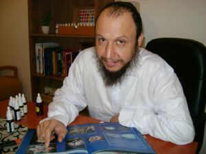

Everything Is Found Within Man
As a boy, R’ Ronen Malul was never the type to play children’s games. He was a very pensive child who always looked for profound meaning in everything he encountered in life. So it was throughout his youth and during his military service. He studied, he worked, he progressed, but he still felt his soul longing for something else. He decided to go to the Chabad House in Dharamsala, India, where he experienced the truth for the very first time. He filled the great spiritual void with the teachings of Chassidus, learning the science of chorology and the healing treatment of Dr. Bach’s flower remedies, which possess tremendous insight for parents and children.

Behind R’ Ronen’s armchair is a library filled with books on natural healing, alongside s’farim on Chassidus, bottles of Dr. Bach’s flower remedies, and cards he recently created with Chassidic texts on “inner consciousness.” On the wall is a certificate of thanks and appreciation he received from patients who found a cure for their problem through his combined health qualifications.
R’ Ronen Malul is a holistic healer who diagnoses through chorology, the science of interpreting health conditions from the palm and fingers of the hand, and the use of Dr. Bach’s flower remedies.
“Chorology is an unconventional scientific approach. The palm of the hand essentially reflects the condition of the body’s inner organs. The palm is a large nerve that absorbs its strength from the brain, and the approach works similar to graphology. Anyone who uses it to predict the future is misleading himself and others. Since a person changes each day, so do the indicators within the palm.”
He had developed his expertise in this field several years earlier, before doing t’shuva and becoming a Chassid. He spent many years searching for some purpose to his life. Among other things, he served in a high-ranking position in the electrochemical department of the Intel computer company. His study of chorology and Dr. Bach’s flower remedies were just one step before his eventual return to the roots of traditional Judaism. Today, he is fully trained in his Chassidic approach, which instills the light of Yiddishkait within the various healing methods he has studied. According to R’ Ronen, Chassidus adds a new and significantly important aspect for anyone who has learned its teachings and then applies this mode of treatment.
In recent years, R’ Ronen has established his main occupation as treating children and youth suffering from various types of emotional distress. He also has a clear level of insight. “Based on my experience, I have learned that as much as I invest in treating children, if the parents don’t cooperate in the process, I can only achieve partial success in my treatment. The source of a child’s behavior is the manner in which his parents conduct themselves towards him,” he declared categorically.
We decided to focus the interview on this healing approach, asking to hear something about it, what Chassidic teachings add to its treatment, and those areas where Bach flower remedies can help. However, as always, we open with our subject’s fascinating life story, which undoubtedly played an important role in helping him to understand how to treat his patients.
AN UNRELENTING YEARNING
R’ Ronen Malul was born in Kiryat Shmoneh in a home totally detached from Torah and mitzvah observance. His mother was raised on Kibbutz Nir David in the Beit Shaan Valley, while his father emigrated to Eretz Yisroel from the Moroccan city of Tangier, where he had lived in a small village to a Jewish family with no connection to the time-honored traditions of our people. “We observed nothing at home. My parents would only mark the Jewish holidays in a superficial manner with routine ritual, devoid of any spiritual depth or meaning.”
When he was in the third grade, Ronen followed one of his neighborhood friends to a synagogue on Friday afternoons. “While I was still very young at the time, I already felt drawn towards matters of depth and inner content. Thus, I found myself visiting this shul with my friend. However, this didn’t last long, and I quickly felt the emptiness again.”
As a boy, he would contemplate deeply. He was most interested in astronomy and history, and he was not the type you would find outside playing soccer. He would receive good marks in school and took a great interest in his studies, searching for true depth in every concept he encountered. While he was growing up his older brother became a baal t’shuva, and this created a great upheaval for the entire household.
“My parents made comments on everything he did, and since he had become Orthodox through the Litvak community, he responded in kind. The result was an atmosphere of belligerence and estrangement towards the path of Torah. From my point of view, the path of Torah was incapable of satisfying my inner hunger. In those days, I perceived Yiddishkait as a world filled with laws bereft of logical explanation, and above all, a lifestyle of stringencies and strictness. I saw my brother suffering, doing things without any sense of joy, so why should I even think of getting involved in that?”
One of Ronen’s most powerful childhood memories was the persistent sound of Katyusha missiles landing in the city. “I definitely remember Operation Peace for the Galilee, when about forty missiles sailed over the city every minute. Explosions could be heard everywhere, and the fear was very great. We sat in bomb shelters for a whole month, as the constant feeling of being under rocket attack left a deep impression upon me. Today, I deal with children’s fears, and there is no child who won’t be emotionally harmed from such an experience.”
He served in the Teleprocessing Corps of the Israel Defense Forces, in charge of handling radio relay stations. During his military service, he would sit in battlefield units placed in strategic locations with simply breathtaking views, and there he would reflect. The tranquility and the wonders of nature gave him the time to stop and think about life and its true meaning. “I remember that I came to the conclusion that I didn’t want to continue living my life this way. I felt that I was maintaining a bogus and untruthful existence, a life with no real joy. I was looking for truth.”
Upon his release from the army, he began to work for the Arkia domestic airline company. After traveling around the world for four years, he enrolled in Tel-Chai Regional College in the Upper Galilee to study biotechnology. “Today, I understand that this was not an appropriate course of study for me. At the time, however, my line of thinking was to learn not what’s most suitable for me, but what was in greatest demand and could earn me the best salary.”
When he completed his studies, he left the Upper Galilee and moved down south to Kibbutz Bror Chayil, where he rented a home and was offered a position with the Intel computer company in Kiryat Gat. R’ Ronen said that during those years, alongside his studies and his work, he continued his search for the truth. He read numerous books on philosophy and consciousness. “The feeling in those days was that I had reached the pinnacle of my aspirations. I had a good job, a nice salary, a house, a car – all the world’s comforts were within my grasp. While it seemed that I had fulfilled the Israeli bourgeois dream, I still felt a sense of emptiness and gloom.
“At a certain stage, it began to cause me serious emotional turmoil. ‘Ronen,’ I would say to myself, ‘why are you so sad? You have everything!’ It led me to increase my reading of books on mysticism. This included books on Tibetan leaders, but they failed to satisfy me. There were other books and approaches that pleased me very much, but the feeling was merely temporary. In most cases, the proposed methods were most impractical and I didn’t feel that I could connect to them.
“Around this same time, I became acquainted with someone on the kibbutz who specialized in palmistry. As I showed him my hands, I was fascinated to hear precise information about myself, including things that I occasionally suppressed. He told me where he had learned this technique, and I decided that I would learn it myself.”
That very week, Ronen traveled to the country’s central region to learn about palmistry. As he entered the classroom, he listened to the instructor as he was busy explaining about the essence of the pinky finger.
“I was amazed by the amount of facts about a person that could be derived from his little finger. I remained in close contact with this teacher for a period of three years until I eventually became a diagnostician myself. This psychological method of reading the palm – chorology – was developed by a Jew named Dr. Arnold Holtzman. He conducted a study and essentially discovered that the palm of the hand was a reflection of the entire body.
“During those years, I also learned about Dr. Bach’s flower remedies. These two magical worlds complemented one another, despite the fact that each one of them was a unique method unto itself.”
Ronen became a lecturer in these two approaches, giving both courses and workshops. “It began on the kibbutz where I was living. The coordinator asked me to give over a nice course for the kibbutz children, and it has since spread to other kibbutzim. I felt for a while that I had finally found the inner peace and tranquility I had been longing for, but it didn’t last long. They later suggested that I should take a course in analytic meditation, two weeks of quiet and exercise. While I did this as well, it didn’t bring me to the inner clarity that I had been expecting.”
FROM THE LOWEST DEPTHS
“There was a Jew living on the kibbutz who knew me and understood my inner turmoil, and he suggested that I travel to India. He promised that I would find inner peace for my soul there. I was enticed by the offer, and I left my job at Intel and bought a one-way ticket to India. I was certain that I would enter a monastery and become a monk until my dying day, r”l.”
Ronen sold his car and all his other possessions, and then boarded a plane for the Indian subcontinent. “As great as the expectations were, so was the disappointment. I headed straight for the Buddhist monastery in Dharamsala. I spoke with the abbot whom I had met upon my arrival, and after a few minutes, I was absolutely disgusted. I felt that I was in the lowest possible place from an intellectual standpoint. As I returned to my quarters, I was beside myself. My dream had been shattered. Then, something amazing happened.
“Suddenly, in this deprived setting, I decided to go up to the mountaintop village of Dharamkot, where I had heard about a Chabad House in operation there. ‘Let’s see what they have to offer,’ I figured. I can’t explain what caused me to do this, but I felt that some hidden force was marching me beyond my control to the Chabad House.
“As soon as I walked in, I met the shliach, Rabbi Dror Shaul, and I quickly connected with him. I felt myself in the presence of a wise and perceptive man, someone who had been through a thing or two in his life. He had a fair understanding of Buddhism, and our talk was very deep and reflective. For the first time, I felt that there was someone who could satisfy my spiritual thirst, and I thoroughly enjoyed the conversation. Until that morning, I lived my life freely without any respect for Jewish traditions – not Yom Kippur, not kashrus. However, the words of Chassidus that he taught me were like cool water for a tired soul. I returned that night to my place of lodging with a very good feeling.
“I had come to India to search for my true being, and I had found it. It was here, in the lowest of all places in the world, that my soul had been uplifted. After my stay in Dharamsala, I continued on to New Delhi, where I visited the local Chabad House there as well. I then decided to return to Eretz Yisroel and look into what course my life should take in light of what I had discovered.
“While it took me some time before I became a full-fledged Chassid, the path of Chassidus and its teachings had already begun to penetrate my soul. I bought s’farim and read them with great zest. Back in Eretz Yisroel, I cut myself off from everything else and moved to Kibbutz El Rom in the Golan Heights. It was there facing the spectacular scenery that I began to make a proper self-assessment, spending much time contemplating until I realized that there must be a Creator.
“Not long afterwards, I moved to Kibbutz Farod, located near Mt. Miron, and I felt that the Rebbe was accompanying me throughout my spiritual journey. My connection to the Rebbe grew stronger, as did my belief in the Creator. It’s impossible to give a logical explanation for this, since I had neither known nor heard of the Rebbe before.
“When I was living in Farod, I began to participate in the Chassidus classes given by the shliach Rabbi Aharon Shiffman, and this was the final step on the path towards return. Rabbi Shiffman regularly invited me to his home for Shabbos, and I was captivated by the Shabbos atmosphere and the community in Tzfas. Finally, I decided that I wanted to go to yeshiva. My parents were stunned, but I was determined. With the guidance of Rabbi Shiffman, I started learning at the Da’at Yeshiva in Rechovos.”
In yeshiva, Ronen began to study Chassidus in greater depth, and his enthusiasm was boundless. He says that he finally felt true satisfaction in his life, like someone who after many years of searching had found his lost treasure. “Chassidus brought true clarity in my life. I had read and studied various philosophies and lifestyles, but they suddenly seemed so superficial in comparison to the truth and depth found within the teachings of our Rebbeim.”
BACH FLOWER REMEDIES AND CHASSIDUS
After learning for a few years in yeshiva, he was introduced to his future wife. Following their wedding, they decided to join the Chabad community in the Holy City of Tzfas. “Over a period of several years, I preferred not to deal with my area of expertise and I looked for other outlets. Then one day, I realized that I was making a mistake. The whole essence of Chassidus is to make a dwelling place for G-d in the lower realms, and the whole essence of the Redemption is to purify the wisdom of the Gentiles. At the advice of mashpiim and rabbanim, I decided to resume my work in this field, this time from a Chassidic approach.”
Doesn’t it sound a bit impractical to connect Chassidus with Bach flower remedies?
“First of all, you have to understand what these remedies are. The roots of this approach began with a man from England named Bach. He discovered that every physical or emotional problem has its source in the soul. As a result of this insight, he found that many wildflowers contain amazing healing powers, each one curing a different ailment. He produced flower essences of a very high level, retaining only the flower’s natural energy. This extract sends a signal to the affected soul and essentially restores it to its previous condition.”
How is this different from conventional medicine?
“According to Dr. Bach’s approach, if the person is suffering from stomach pains, you don’t check to see what he’s been eating; you see why he’s so tense. Based on the resulting diagnosis, I give him a remedy to calm his tension and the stomach pains will thereby disappear. Physiological problems often derive from a psychological condition, and it’s my responsibility to find the emotional problem.”
Where does the unique profundity of Chassidus enter the picture?
“Anyone who has read Dr. Bach’s book after previously learning Chassidus can often identify certain Chassidic concepts, even though Dr. Bach doesn’t mention G-d in his writings. One of Dr. Bach’s principles is that there can be no healing without changing towards a more proper outlook that restores a person to his true self. These are the directions in thought that Chassidic teachings speak about at great length, and I was very excited in the past by this discovery. However, when I came to the world of Chassidus, I perceived these concepts more clearly – a true connection to the Creator without half-baked ideas. Complete truth.
“Chassidus brings even greater depth to Dr. Bach’s approach. If a person is afraid that I’ll give him a medication for a certain ailment that will simply reappear later, that’s not an outright healing. Chassidus provides an intrinsic solution to every conceivable difficulty. I’ll give you an example: When a person asks for medication to help calm his fears, it usually provides only temporary relief and the fear returns. Chassidus offers a deeper response: It looks into why someone is afraid, and the answer will be that he has a problem with his trust in G-d. When a person instills himself with faith in the Alm-ghty, the fear disappears on its own.
“There are many other examples: Take the case of a person who has no self-confidence. This is usually the result of problems with a father figure who failed to give him a feeling of self-worth when he was a child. While there is a flower essence that helps in building self-confidence, if the problem remains at this level, it will simply return sooner or later. Together with the treatment, I provide direction based on Chassidic teachings, which explain that the world was created expressly for a Jew and how man was created in G-d’s image. Thus, when a person contemplates this point, it has an effect upon his self-confidence. When the person internalizes this, it gives him greater confidence and a higher sense of awareness. This is a far more profound stage that a practitioner who has studied Chassidus can utilize.”
THE PALM OF THE HAND REVEALS EVERYTHING
In addition to treating people with Dr. Bach’s flower remedies, R’ Ronen diagnoses various emotional hardships and health problems through the palm of the hand. “Physical information available through the hand gives us some amazing facts about the human body and its needs, both physical and emotional. This approach is pseudo-scientific, as it seeks to reveal details about a person’s character by delving into the features of his palm.
“According to Dr. Bach, the palm is divided into different regions, based on its characteristic lines. The more these lines stand out, the stronger the dimensions they represent in a person’s qualities. I primarily deal with the emotional stratum – phobias, emotional tendencies, personality traits. This makes it easier for me to treat the patient and give him the appropriate remedy.”
You are aware that people reading this now are asking themselves: And what about “Be wholehearted with Hashem, your G-d?” Isn’t there a problem with a Chabad Chassid making diagnoses in this fashion?
“The truth is that at the start of this process, I recoiled at the thought of using this technique, and I asked mashpiim and rabbanim. They explained to me that if this refers to a method of healing, it is permissible because it’s a vessel for treatment of health problems. After making a preliminary analysis, I can know what the person’s ailment is and give him the proper Bach flower remedy. Quite often, there are cases when the patient has difficulty expressing his feelings or is totally unaware of them. The analysis proves most helpful in such circumstances.
“It is known that certain Chabad Rebbeim accepted the use of graphology – the study and analysis of handwriting. The chorology approach is strikingly similar to graphology. The largest nerve in the brain is connected to the palm, and therefore, every physiological movement or appearance has a direct line to the brain, which is the human body’s central computer. This is the reason why we can immediately see every human problem in a person’s palm. However, it’s also quite remote from all the superficial methods upon which many people depend. The palm is a very accurate gauge for health restoration – it’s used in eighty percent of tests determining a cure for medical ailments. As a result, this approach is quite capable of helping our fellow Jews.”
Recently, you began treating primarily children, and you claim that Bach flower remedies work best on them. Why do you believe this?
“From my experience, I have seen that these remedies work best with children. As a person matures, there are usually more barriers, more layers, more crust that cover up his true inner self. He has greater insight, experienced much in his life, and has had far more opportunities to think negatively about himself. This is less developed in children. Thus, when I want to bring a person back to himself, it’s quite clear that for someone who hasn’t gone too far from his source, it’s easier for him to get back on track.”
According to various studies, more and more children suffer from one kind of fear or another. How can Bach flower remedies treat fear?
“There is a sign on the hand that indicates a fear of being abandoned, and I actually find this with almost every child. As a result of today’s lifestyles, parents tend to be very preoccupied with making a living and don’t have enough time to devote to their children. The children are often left alone or spending too much time with baby-sitters. Even when the parents are around, they really aren’t available for their children’s emotional needs.
“You have to understand that when a child says, ‘I’m bored,’ he’s actually afraid. He wants to know what’s happening at every moment or he’ll have no peace of mind. Difficulty falling asleep at night and being overly nervous are forms of fear. Children today suffer from many phobias. Fear of animals is widespread, particularly among those living in religious communities, as is the fear of being alone in dark places. There’s a whole selection of remedies to treat such conditions, but to do so properly, the level of parenthood first must be corrected.”
Do you favor the use of Ritalin with children who suffer from problems of attention deficit hyperactivity disorder (ADHD)?
“My approach is that Ritalin helps a child suffering from bouts of attention deficiency, and only when the parents lack the time necessary to help their child. In such cases, this really is the only solution; if he doesn’t take his Ritalin, he’ll fall apart. However, if the parents have the time to give to their child and sufficient funds for intense emotional treatment, they can definitely skip the pills.
“I am not against Ritalin, but I am against saying that it’s the only solution. Even when parents do give emotionally to their child, they can’t forget that there must also be massive support on their part. That includes quality time with their children, at least one hour a week. Take them out shopping, don’t be affected by their extra energy, and above all, don’t shut them up. On the contrary, lead them in a positive direction and allow them to use all their vigor towards building things constructively. The personal connection with parents is very important in order for such children not to feel a sense of frustration.
“There are certain circumstances of emotional distress in which the Bach flower remedies can be most helpful. However, without the parents’ cooperation, the help can only be short-term.”
What type of ailments are Bach flower remedies unable to cure?
“They are most effective in dealing with emotional problems. However, if someone comes to me in the midst of suffering a heart attack, I would immediately call for an ambulance.”
Why don’t you just let matters take their own course at they did in the past, before such healing techniques were discovered?
“In principle, I agree that things should be allowed to take their own course, provided that they do not cause a person any distress. However, I also know that problems can’t be solved on their own. If someone comes and says that he has a certain difficulty that is hurting him and his environment, it must be treated. Problems don’t just sprout up out of nowhere. They are based on some psychological reason created by a certain emotional imbalance, and if this imbalance is not treated, the problem will remain. Health practitioners are not magicians. They come to help a person change his approach regarding his specific health condition, and when this happens, the practitioner and the remedy he provides are useful tools in helping the person to help himself.
“A woman once came to me for help. While she had a steady job as a successful accountant, she also suffered from emotional distress and nobody understood why. We examined her, and we discovered that she worked in a profession that was totally inappropriate for her. Every day she was in this job brought her greater frustration. She simply did what people expected her to do, not what was right for her. This essentially created a serious conflict within herself. She eventually changed her profession, and then started taking the Bach flower remedies I prepared for her. She followed my advice, and her life soon became a joy again. If she hadn’t received any treatment, her condition would only have worsened.”
You have been concentrating your work for several years on helping children with emotional difficulties. What is the main degree of understanding it has given you?
“I have reached the clear conclusion that if parents don’t cooperate in the process, it is destined to fail. If a child comes to me with a low level of self-confidence, it is often the result of a problematic father who emotionally abuses his child and makes him feel worthless. In such a case, what good will my treatment do? In fact, I have recently begun asking parents to take remedies as well, if the need arises. In those cases where the parents give their cooperation, I see significant change for the better.”
How is all this connected with the Redemption?
“Redemption represents fulfillment, correcting the source of all problems. If people had previously related only to the ailment, they now look at the whole picture instead, getting down to the very heart of the matter. It’s impossible to separate the body from the soul – and that’s the very concept of Redemption. As the Rebbe has always said, this future Geula won’t be like the first or the second Redemption, which were not complete Redemptions. This time, it will be a True and Complete Redemption with no exiles to follow. We want to connect the upper and lower realms, thereby bringing Redemption to our world. This connection shows how everything is truly linked and inseparable.
“The Rebbe teaches in his sichos that among the things to be done prior to the Redemption is elevating the wisdom of the Gentiles to holiness. Dr. Bach was a Gentile doctor from England, and what we do in our work is to use this healing approach for holy purposes. In recent years, I have written numerous articles and given lectures in this field, which integrate these remedies with the teachings of Chassidus and the tremendous added value they provide by ‘spreading the wellsprings.’ In the words of the Rambam, ‘the streams of wisdom have opened,’ and we now are expecting the fulfillment of the rest of the prophecy when we shall see the Rebbe Melech HaMoshiach redeeming us.”
Editor’s Note: This article is not a recommendation of any form of medical treatment. The information provided herein solely represents the opinion of the interviewee.
Nosson Avrohom. "Everything Is Found Within Man." Beis Moshiach, no. 905 (December 5, 2013).